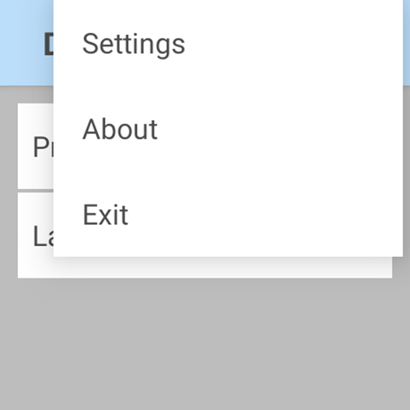
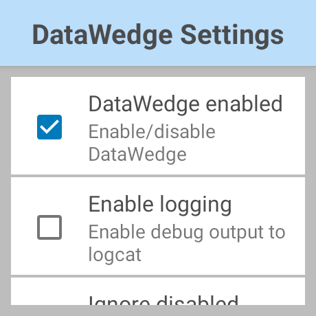
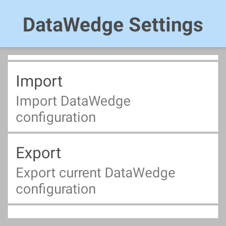

概要
Zebra WS50 は、バーコードや高解像度の写真の撮影、push-to-talk、プログラム可能ボタンなど、フル サイズのモバイル コンピュータの主要な機能を提供するコンパクトな Android エンタープライズ クラスのウェアラブル モバイル コンピュータです。DataWedge のコア機能と特性を備えていますが、画面サイズとフォーム ファクタによっては制限があります。このガイドでは、WS50 の DataWedge の機能について説明します。
 WS50 の画像
WS50 の画像
サポート対象機能
WS50 では、次の DataWedge 機能がサポートされています。
- DataWedge プロファイル - プロファイル は、データの収集方法 (入力)、処理方法 (データのフォーマット)、およびアプリケーションへの配信方法 (出力) を指定します。WS50 では、DataWedge はプロファイル名の表示のみを許可するように制限されており、詳細を表示することはできません。次のプロファイル設定がサポートされています。
- データ入力:
- バーコード スキャン – バーコードをスキャンしてデータを取得します。
- データ処理:
- BDF (基本データ形式) – 取得したデータを基本形式のルールに基づいて処理します。
- ADF (高度なデータ形式) – カスタム形式ルールに基づいて取得したデータを処理します。
- データ出力:
- インテント出力 (推奨) –取得したデータは、関連するアプリケーションに渡され、そこで消費または処理されます。
- キーストローク出力 – 取得したデータを収集し、そのデータを一連のキーストロークとして関連付けられたアプリケーションに送信します。
- DataWedge 構成のインポート – DataWedge の設定またはプロファイル (あるいはその両方) をインポートします。「構成」セクションを参照してください。
- DataWedge インテント API – Android インテントを使用して、データ キャプチャをプログラムで制御します。すべての API がサポートされています。
- DataWedge Manager CSP - 基盤となる MX フレームワークを使用して DataWedge 構成を一括展開します。
制限事項
WS50 での DataWedge には、次のような制限があります。
- ユーザー インタフェース (UI) が制限されているため、WS50 以外の Zebra モバイル コンピュータを使用して、UI から DataWedge プロファイルを目的の設定で構成し、プロファイルをエクスポートしてから WS50 にインポートすることをお勧めします。または、DataWedge インテント API を使用して、プログラムで DataWedge を構成することもできます。
- DataWedge のメイン画面に、インポートされたプロファイルのリストが表示されます。WS50 では、プロファイルの詳細を表示または変更できません。メニュー オプションを使用して、構成をインポートできます。
- スキャン フレームワーク バージョン 31.8.1.0 以降の WS50 では、スキャン パラメータからのタッチ フィードバックのデコードはサポートされていません。
- 次の DataWedge 機能 はサポートされていません。
a. RFID 入力
b. シリアル入力
c. ワークフロー入力
d. 音声入力
e. DWDemo – 他の Zebra Android モバイル コンピュータに組み込まれている DataWedge サンプル アプリケーション。WS50 で工場出荷時のリセットまたはエンタープライズ リセットを実行すると、DWDemo アイコンが数秒間表示されてから消えます。
g. Data Capture Plus - デバイス画面の領域をスキャン トリガとして指定できるようにします
g. 設定ファイルとプロファイルの自動インポート - Android マルチユーザー プロファイルが設定されているデバイスでは、DataWedge が期待どおりに動作しない場合があります。
推奨事項
WS50 の特性のために、次のガイドラインに基づいて、アプリケーションのバーコードをスキャンするために DataWedge を使用することをお勧めします。
- 複数のアプリケーションでバーコード スキャンを実行する必要がある場合、アプリケーションごとに個別の DataWedge プロファイルを作成します。
WS50 を設定するには、設定ファイルのエクスポート/インポート方法を使用します。WS50 以外の Zebra Android モバイル コンピュータでは、WS50 を対象とする DataWedge の構成を作成し、構成をエクスポートしてから WS50 にインポートします。以下の「構成」および「導入」セクションを参照してください。
バーコード スキャンを特定のアプリケーションに制限する必要がある場合は、デフォルトの DataWedge プロファイル Profile0 を無効にします。
アプリケーションの使用中にスキャンの動作を変更する必要がある場合は、スキャナ パラメータの切り替え インテント API を使用してスキャナ パラメータを変更できます。
構成
DataWedge プロファイルは、実行中のアプリケーションに基づいて、データの取得方法、処理方法、および出力方法を決定します。DataWedge プロファイルは WS50 では表示または編集できません。次のいずれかの方法を使用して、DataWedge プロファイルを構成します。
- ユーザー インタフェース (UI) - 別の Zebra Android モバイル コンピュータから DataWedge プロファイルを作成し、プロファイルをエクスポートしてから WS50 にインポートします。
- プログラム - DataWedge インテント API を使用して DataWedge プロファイルを作成します。
DataWedge 設定ファイルには、プロファイルや以下の設定可能なパラメータを含むすべての DataWedge 設定が含まれています。
- DataWedge の有効化/無効化
- 無効なプロファイルを無視 - DataWedge のプロファイルが無効なプロファイルに切り替えられないようにします。
- アプリの無効化 - アプリがデータを取得できないようにします。
DataWedge の設定は、UI を使用するか、別のデバイスからエクスポートされた設定ファイルをインポートすることで設定できます。
DataWedge の設定の詳細については、以降のセクションで説明します。
UI を使用してプロファイル/構成を作成する
UI を使用して DataWedge プロファイルまたは設定ファイルを作成するには、次の手順に従います。
- WS50 以外の Zebra Android モバイル コンピュータでは、プロファイルを作成する手順に従います。
- アプリをプロファイルに関連付けるには、モバイル コンピュータに WS50 のターゲット アプリを一時的にインストールします。
- 目的の設定を使用してプロファイルを構成します。Zebra では次の機能を推奨しています。
A. 一時的にインストールされているアプリケーションから、アプリケーションをプロファイルに関連付けます。
B. バーコード入力が有効になっていることを確認します。内蔵イメージャの バーコード入力パラメータを設定します。
C. キーストローク出力を無効にします。
D. インテント出力を有効にすると、データ処理をより柔軟に実行できます。データを受信するアプリケーションに基づいて、要件に応じて設定を調整します。
• 基本データ形式または高度なデータ形式をインテント出力プラグイン用に設定して、データの処理方法を制御できます。
E. サポートされていない DataWedge 機能がプロファイル内で有効になっていないことを確認します。WS50 「制限事項」セクションを参照してください。 - プロファイルをエクスポートするには、この手順に従います。ファイルが
dwprofile_[profilename].dbにエクスポートされます。この場合、[profilename] は入力したファイル名です。 - 設定ファイル (DataWedge 設定とすべてのプロファイルを含む) をエクスポートするには、この手順に従います。ファイルは
datawedge.dbとして保存されます
プロファイルまたは設定ファイルがモバイル コンピュータからエクスポートされました。「導入」セクションの手順に従って、ファイルを WS50 に導入またはインポートします。
プログラムでプロファイルを作成する
DataWedge プロファイルは、DataWedge インテント API の「構成の設定」を使用して、プログラムで設定できます。「データ収集のサンプル」を参照してください。
DataWedge 設定の構成
DataWedge を設定するには、次の 2 つの方法があります。
- ファイルのエクスポート後に、WS50 以外の Zebra Android モバイル コンピュータから設定ファイルをインポートします。
- 必要に応じて、ユーザー インタフェースを使用して設定を構成します。
設定ファイルのインポート
設定ファイルをインポートするには、「導入」セクションの手順に従ってファイルをインポートします。
UI を使用した構成
UI から DataWedge の設定にアクセスするには、次の手順に従います。
右上のメニューをタップして [設定] を選択します。 
次のオプションが表示されます。
- DataWedge 有効 - DataWedge サービスを制御します。このチェックボックスをオフにすると、デバイス上の DataWedge が無効になり、スキャン ハードウェアの制御がシステムに戻ります。
- ロギングの有効化 - Logcat を使用して、Android Studio 内で、またはその他の互換性のあるビューアを使用して、表示可能なログを DataWedge で出力できるようになります。
- 無効なプロファイルを無視 - アプリケーションが Switch to Profile API を呼び出したときに、無効になっているプロファイルに DataWedge が切り替えられないようにします。
- 無効アプリ リスト - デバイス上で選択したアプリやアクティビティのスキャン機能を無効にします。
- インポート - デバイスのストレージから DataWedge プロファイルまたは設定ファイルをインポートして、現在の DataWedge の設定とプロファイル (ある場合) を置き換えます。詳細については、「導入」セクションを参照してください。
- エクスポート - 現在の DataWedge 構成をデバイス ストレージにエクスポートします。詳細はこちら。
- 復元 - デバイスの DataWedge を工場出荷時のデフォルト設定に戻します。詳細については、「詳細情報」を参照してください。
 
 DataWedge 設定
展開
エクスポートしたファイル (「構成」」セクションを参照) を WS50 デバイスにコピーし、次のように設定をインポートして、DataWedge プロファイルまたは設定ファイルを展開します。
エクスポートされた設定ファイル (
datawedge.db) またはプロファイル (dwprofile_[profilename].db、[profilename] は入力したファイル名) を、WS50 デバイスのフォルダーの場所 (/storage/emulated/0/Android/data/com.symbol.datawedge/files) にコピーしてください。DataWedge を開きます。

右上のメニューをタップして [設定] を選択します。
下にスクロールして [インポート] を選択します。

インポートする目的のプロファイルまたは設定ファイルを参照して選択します。
ファイルがインポートされます。インポートが成功すると、確認メッセージが表示されます。
インポートされたプロファイルが [DataWedge プロファイル] 画面に表示されます。
データの受信
WS50 では、DataWedge が受信したデータをインテントまたはキーストロークで出力できます。
インテントを使用する場合
インテント出力を使用して、インテントを介してバーコード データを受信します。これは、UI を使用 (別のデバイスを使用) するか、プログラムで「構成の設定」を使用して設定できます。ブロードキャスト インテントを使用する場合、目的のアプリケーションにのみデータが配信されるようにコンポーネント情報を指定します。以下の「DataWedge インテント API」セクションを参照してください。
注: デフォルトでは、キーストローク出力はすべてのプロファイルで有効になっています。インテント出力プラグインが有効になっている場合、キーストローク出力プラグインを無効にして、アプリケーション内でフォーカスされているテキスト フィールドに予期しないデータがディスパッチされないようにしてください。
キーストロークを使用する場合
キーストローク出力を使用して、一連のキーストロークとして関連するアプリケーションにデータを送信します。これは、プロファイルを使用して設定します。
DataWedge インテント API
DataWedge インテント API は、データのキャプチャ方法、処理方法、出力方法、アプリケーション内の DataWedge 設定をプログラムで制御します。すべての DataWedge API は WS50 でサポートされています。このセクションでは、よく使用される API と関連ドキュメントへのリンクが記載されています。
プロファイルの作成/更新
「構成の設定」を使用して、プロファイルとその設定を作成または更新します。プロファイルには、データの入力方法、処理方法、および出力方法に関する設定が含まれています。データは基本データ形式 (BDF) または高度なデータ形式 (ADF) で処理できます。プロファイルには、次のプロファイルを含めてください。
- アプリの関連付け - PACKAGE_NAME に基づいて、プロファイルに関連付けられたアプリを指定します。
- スキャナ入力設定 - データ キャプチャ用のバーコード入力パラメータを指定します。
- 出力設定 - インテント出力またはキーストローク出力のいずれかの出力方法に基づいて、データの出力方法を指定します。
構成またはプロファイルのインポート
構成のインポート インテント API を使用して、Zebra Android モバイル デバイスからエクスポートした後に設定ファイルまたはプロファイルをインポートします。次のフォルダ パスを指定して、ファイルをインポートします。/storage/emulated/0/Android/data/com.symbol.datawedge/files/
実行時にスキャナ パラメータを更新します
[スキャナ パラメータの切り替え] を使用して、実行時にアクティブなプロファイルのバーコード、スキャナ、リーダーのパラメータを更新します。
スキャナの制御
スキャナ入力プラグインを使用して、アクティブなプロファイルで使用中のバーコード スキャナを制御します。実行時にスキャナを有効化/無効化、またはサスペンド/再開します。アクションは、 スキャナ ステータス通知の登録から取得されるスキャナ ステータス (SCANNER_STATUS) に基づいて実行できます。これにより、アプリケーションがスキャンからのデータを処理しながら、次のスキャンを受け入れる準備ができるまでスキャナをサスペンドすることができます。
ベスト プラクティス
DataWedge API の使用に関するガイダンスについては、ベスト プラクティスのドキュメントを参照してください。
サンプル アプリ
トラック積み込みデモ アプリでは、トラックに積み込む荷物をスキャンするワークフローを実演します。
関連ガイド:
- EMDK for Android Programmer's Guide - WS50 でのプログラミングに関する詳細情報と考慮事項を提供します。
- DataWedge API
- プロファイル
- DataWedge 設定
- トラック積み込みデモ